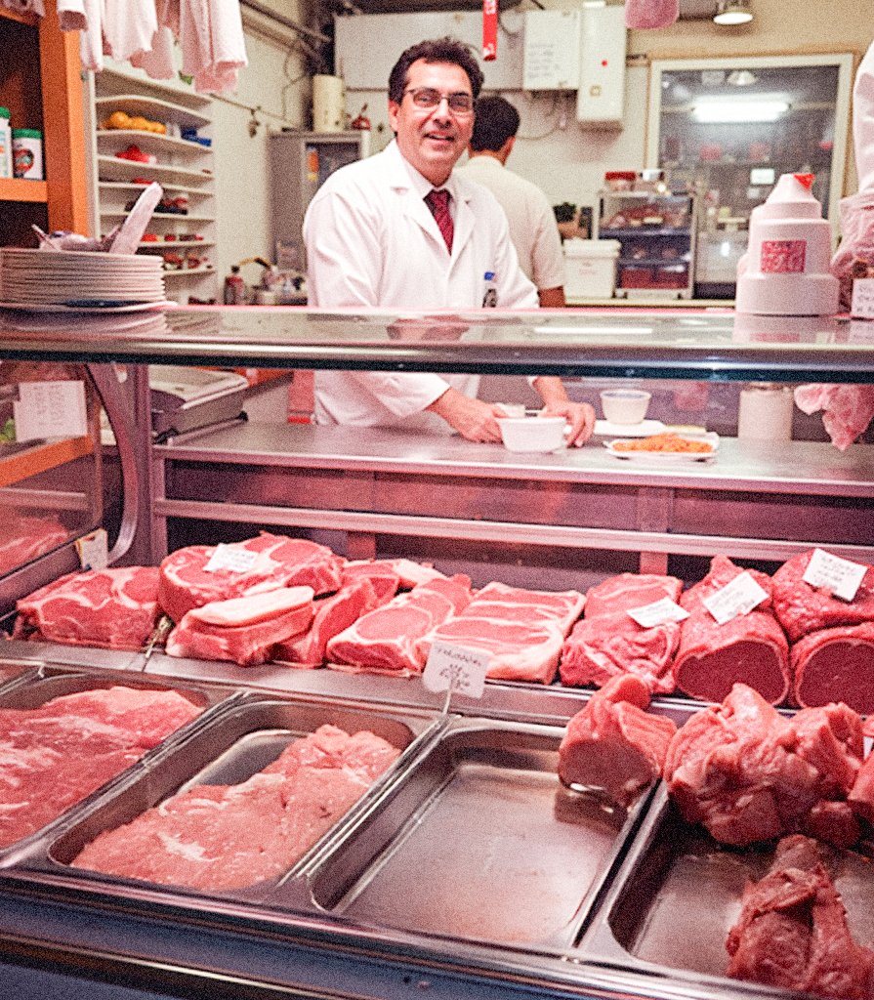

De Veciariìe, termine del dialetto barese che sta per "Macellerie", è l'archivio nato dall'idea di Ruggiero Somma che voleva rendere omaggio al suo mestiere. Ruggiero era un macellaio originario di Barletta that aveva trovato a Bari la sua casa e la sua bottega. Per lui, il mestiere non era solo vendere carne, era una cultura fatta di gesti precisi, di utensili e di rapporti umani. Così, tra gli anni 80 e 90, con una macchina fotografica sempre a portata di mano, iniziò a documentare tutto quello che vedeva durante i suoi viaggi in giro per la Puglia. Fotografava le collezioni di coltelli dei suoi colleghi, quasi fossero reliquie, e poi i banchi da lavoro, le insegne colorate dei negozi di paese, le saracinesche pesanti e i tagli di carne eseguiti a regola d'arte. Il suo obiettivo era creare una raccolta che rimanesse nel tempo, una sorta di eredità che potesse trasmettere quello che c'era dietro il suo mestiere. Voleva che chi sarebbe venuto dopo di lui potesse vedere com'era la vita nelle botteghe pugliesi in quegli anni di benessere. Ma proprio mentre l'archivio prendeva la sua forma definitiva, la realtà prese una piega diversa. L'arrivo della "Mucca Pazza" in Italia non fu solo una crisi sanitaria, ma un terremoto sociale che distrusse la fiducia della gente e svuotò le macellerie. La Macelleria Somma, che doveva essere la custode di questa memoria, fu costretta a chiudere i battenti, e con lei sparirono molti dei negozi che Ruggiero aveva fotografato con tanta cura in tutta la regione. Così, quello che doveva essere l'orgoglioso album di una categoria vincente si trasformò, quasi per ironia della sorte, nel documento di un fallimento collettivo. Senza volerlo, Ruggiero aveva creato l'unica testimonianza rimasta di un mondo cancellato da un'emergenza sanitaria e sociale. Oggi, sfogliare De Veciariìe non significa solo guardare tagli di carne o vecchi negozi, ma immergersi nel racconto malinconico di un uomo che voleva far scoprire al mondo la bellezza del suo mestiere, finendo per consegnarci la cronaca di una scomparsa.